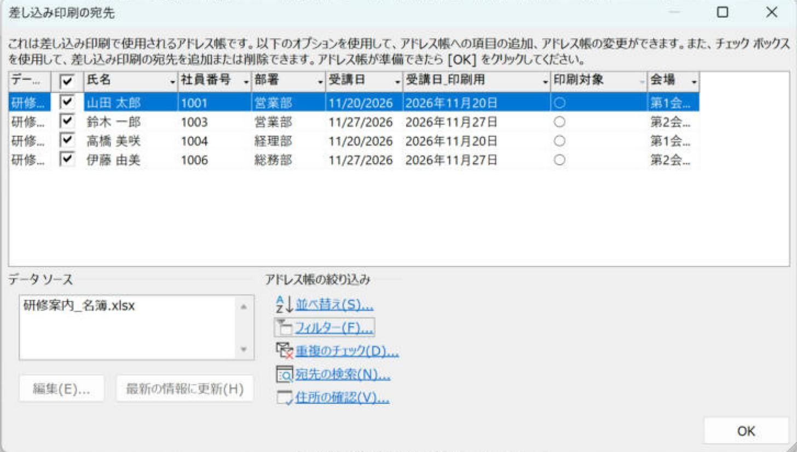
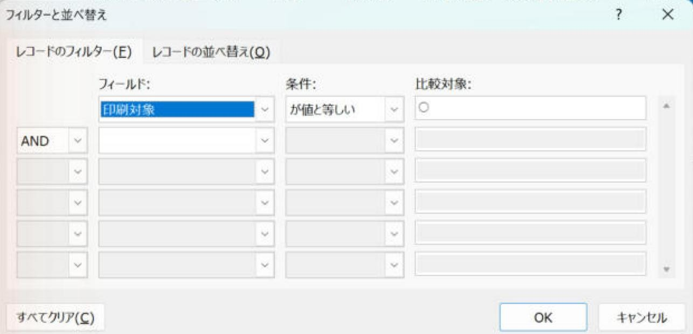
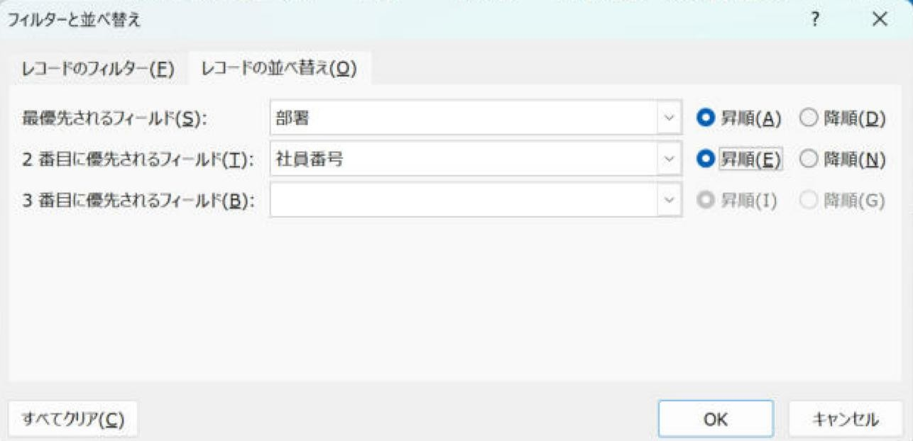
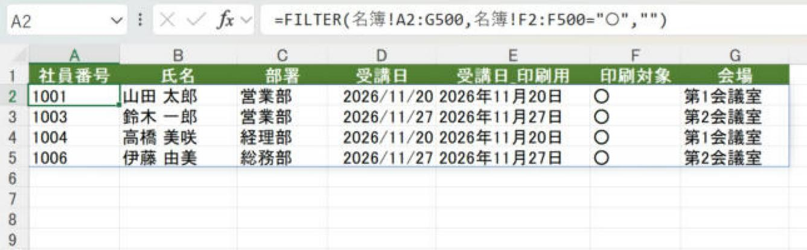
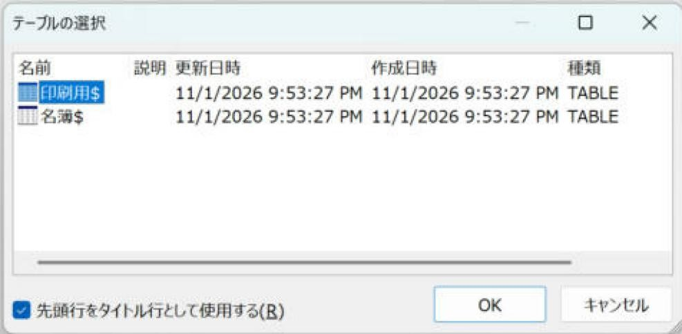

Word差し込み印刷で必要な人だけ印刷する2つの方法：Word側で絞り込む／Excel側で対象者の表を作る
チェックやフィルターで対象者を決め、完成文書の人数を照合します。
条件が単純ならWordの「アドレス帳の編集」→「フィルター」、条件が複雑ならExcelで対象者だけのシートを作ります。Excelのオートフィルターで隠すだけでは絞り込めません。
やさしい（Lv.2）
- 対象の列を用意
- 条件で絞る
- 人数と順番を確認
- 対象者を出力
目次
💡 「必要な人だけ印刷」の決め方は2つあります
Excelの名簿全員ではなく、「今回の対象者だけ」に差し込み印刷したいことはよくあります。対象者の決め方は、次の2つのパターンがあります。
| 観点 | パターン1：Word側で絞り込む （アドレス帳の編集） | パターン2：Excel側で対象者だけの表を作る |
|---|---|---|
| 名簿ファイル | 名簿をそのまま使う | 名簿とは別に「印刷用」シートを作る |
| 絞り込む場所 | Wordの「アドレス帳の編集」 | Excel（FILTER関数、またはコピー） |
| できること | チェックで外す／条件で絞る（最大6条件）／並べ替え／重複のチェック | Excelの関数でできることなら何でも（日付の範囲、複雑な条件など） |
| 苦手なこと | 日付の範囲など、文字として比べにくい条件 | 名簿とは別のシートを管理する手間 |
| 向いている場面 | 部署・地区・「印刷対象＝○」など、条件が単純なとき | 条件が複雑なとき、対象者の一覧を印刷前に人に見せて確認したいとき |
Excelでオートフィルターをかけて行を隠し、保存しても、Wordには隠した行も含めて全員分が読み込まれます。絞り込みは、パターン1かパターン2のどちらかで行ってください。
差し込み印刷の開始から印刷までの全体の流れは 差し込み印刷の流れ：絞り込みから印刷まで にまとめています。この記事では、その中の「絞り込み」を詳しく説明します。
最初の練習：3人から2人だけ出します
- 名簿に「印刷対象」列を作り、山田さんと鈴木さんを「○」、佐藤さんは空欄にします。
- Excelを保存した後、Wordで接続します。
- Wordの「アドレス帳の編集」→「フィルター」で「印刷対象」「等しい」「○」を指定します。
- 一覧が山田さん・鈴木さんの2人になったことを確認します。
- 「個々のドキュメントの編集」→「すべて」で出力します。この「すべて」は、抽出後の2人です。
- フィルターを解除した場合は、3人へ戻ったことも確認してから保存します。
準備：名簿に「絞り込みに使う列」を作っておく
どちらのパターンでも、Excelの名簿に絞り込みの目印になる列があると楽になります。
| A | B | C | D | E | F | G | |
|---|---|---|---|---|---|---|---|
| 1 | 社員番号 | 氏名 | 部署 | 受講日 | 受講日_印刷用 | 印刷対象 | 会場 |
| 2 | 1001 | 山田 太郎 | 営業部 | 2026/11/20 | 2026年11月20日 | ○ | 第1会議室 |
| 3 | 1002 | 佐藤 花子 | 総務部 | 2026/11/20 | 2026年11月20日 | 第1会議室 | |
| 4 | 1003 | 鈴木 一郎 | 営業部 | 2026/11/27 | 2026年11月27日 | ○ | 第2会議室 |
| 5 | 1004 | 高橋 美咲 | 経理部 | 2026/11/20 | 2026年11月20日 | ○ | 第1会議室 |
| 6 | 1005 | 田中 健 | 製造部 | 2026/11/27 | 2026年11月27日 | 第2会議室 | |
| 7 | 1006 | 伊藤 由美 | 総務部 | 2026/11/27 | 2026年11月27日 | ○ | 第2会議室 |
| 8 | 1007 | 渡辺 翔太 | 製造部 | 2026/11/20 | 2026年11月20日 | 第1会議室 | |
| 9 | 1008 | 中村 優子 | 営業部 | 2026/11/20 | 2026年11月20日 | 第1会議室 |
- 印刷対象：今回送る人に「○」を付ける列です。条件を考えずに、目で見て対象者を決められます。
- 受講日_印刷用：
=TEXT(D2,"yyyy年m月d日")で作った、差し込み用の列です。 - 保存して、Excelを閉じてからWordでつなぎます。
パターン1：Word側で絞り込む（アドレス帳の編集）
Excelの名簿をWordにつないだ後（「宛先の選択」→「既存のリストを使用」）、「差し込み文書」タブ → 「アドレス帳の編集」を押すと、「差し込み印刷の宛先」の画面が開きます。絞り込みはすべてこの画面で行います。

1-1. チェックボックスで外す（数人だけ外したいとき）
- 一覧の左のチェックを外した人は、差し込み・印刷の対象から外れます。
- 見出しのチェックボックスで、全員のチェックをまとめて付けたり外したりできます。「全員外してから、送る人だけチェックを付ける」という使い方もできます。
- 列の見出しをクリックすると、その列で並べ替えて表示できるので、探しやすくなります。
チェックを外した状態が次回文書を開いたときにも残るかは、環境により結果が異なる場合があります。毎回同じ人を外すなら、1-2のフィルターを使う方が確実です。
1-2. フィルターで条件を指定する（おすすめ）
- 画面下の「アドレス帳の絞り込み」から「フィルター」を押します。
- 「フィルターと並べ替え」の画面の「レコードのフィルター」タブで、1行目に条件を入れます。
- フィールド：どの列で絞るか（例：印刷対象）
- 条件：どう比べるか（例：が値と等しい）
- 比較対象：何と比べるか（例：○）
- 「OK」を押すと、一覧が条件に合う人だけになります。

| 条件 | 意味 | 使用例 |
|---|---|---|
| が値と等しい | 比較対象と同じ | 印刷対象 等しい ○ |
| 等しくない | 比較対象と違う | 部署 等しくない 役員室 |
| より小さい／より大きい | 未満／超える | 社員番号 より大きい 2000 |
| 以下／以上 | その値を含む | 社員番号 以上 1000 |
| 空白 | 何も入っていない | メールアドレス 空白（紙で送る人だけ） |
| 空白でない | 何か入っている | 氏名 空白でない（空の行を除く） |
| 含む／含まない | 文字の一部が入っている／いない | 住所1 含む 千代田区 |
「が値と等しい」は実画面で確認済みです。それ以外の条件の表示名は、環境により結果が異なる場合があります（「が値と等しくない」「が空白」のような形で表示されます）。
1-3. 条件を組み合わせる（AND／OR）
2行目以降にも条件を入れると、条件を組み合わせられます（最大6行）。2行目の左端で「AND」か「OR」を選びます。
| やりたいこと | 1行目 | 2行目 |
|---|---|---|
| 営業部で、今回の対象の人 | 部署 等しい 営業部 | AND 印刷対象 等しい ○ |
| 営業部か総務部の人 | 部署 等しい 営業部 | OR 部署 等しい 総務部 |
| 11月20日受講で、氏名が空でない人 | 受講日_印刷用 等しい 2026年11月20日 | AND 氏名 空白でない |
「営業部か総務部で、かつ印刷対象が○」のように AND と OR を3行以上混ぜると、意図しない組み合わせになることがあります。迷ったら、Excelの「印刷対象」列に○を付けて、Word側は「印刷対象 等しい ○」の1条件にするのが確実です。
1-4. 並べ替える（印刷する順番）
- 「フィルターと並べ替え」の画面の「レコードの並べ替え」タブを開きます。
- 「最優先されるフィールド」「2番目に優先されるフィールド」…と、最大3つまで指定し、昇順・降順を選びます（例：部署 → 社員番号）。
配る順番に並べて印刷すると、仕分けの手間が減ります。

1-5. 重複のチェック・宛先の検索
- 重複のチェック：同じ内容の行がないか探して、重複した行のチェックを外せます。同じ人に2通送るのを防げます。
- 宛先の検索：名前などで特定の人を探し、チェックが付いているか確認できます。
1-6. 絞り込みを解除する・確認する
- フィルターの画面の「すべてクリア」で、条件をすべて外します。
- フィルターの設定は差し込み文書と一緒に保存されます。次回開いたときに前回の条件が残っていることがあるので、印刷の前に必ず「アドレス帳の編集」で件数と条件を確認します。
1-7. 日付・数値で絞るときの注意
Word側の比較は、Excelのように日付を「日付の値」として比べられないことがあります。「受講日が11月1日〜11月30日」のような範囲の条件は、Word側では失敗しやすいため、次のどちらかにします。
- Excelの名簿に「対象月」列（
=TEXT(D2,"yyyy年m月")）を作り、Word側で「対象月 等しい 2026年11月」にする。 - パターン2（Excel側で対象者だけの表を作る）を使う。
日付・数値の比較のされ方は、環境により結果が異なる場合があります。結果のプレビューで件数を必ず確認してください。
パターン2：Excel側で対象者だけの表を作る
条件が複雑なときや、印刷前に「この人たちに送ります」という一覧を上司に確認してもらいたいときは、Excel側で対象者だけの表を作り、その表をWordにつなぎます。
2-1. Excelのフィルターで対象者をコピーする（通常の方法）
- 名簿でオートフィルターをかけ、対象者だけを表示します。
- 見出しを含めて表示されている範囲を選び、Alt+;（可視セルの選択）を押してからコピーします。
- 新しいシート「印刷用」のA1セルに、値として貼り付けます。
- 対象外の人が混ざっていないか、件数と氏名を照合します。
- 保存して閉じ、Wordで「印刷用$」を選んでつなぎます。
この方法は、毎回コピーし直す必要があります。くり返す作業なら、パターン1（Word側のフィルター）で「印刷対象 等しい ○」にする方が手間がかかりません。
2-2. FILTER関数で自動抽出する（対応するExcelを使う場合）
- 新しいシートを作り、名前を「印刷用」にします。
- 1行目に、名簿と同じ見出しを入力します（名簿の1行目をコピーして貼り付けると確実です）。
- A2セルに次の式を入れます。条件に合う人だけが、2行目から下に並びます。
名簿のF列（印刷対象）が「○」の行だけを取り出します。該当者がいないときは空になります。

=FILTER(名簿!A2:G500,名簿!F2:F500="○","") を入れると、8名の名簿から○の4名だけが並びました。 （画像をクリックで拡大）条件の例：
営業部で、受講日が2026年11月中の人。* は「かつ（AND）」、+ にすると「または（OR）」になります。日付の範囲もExcel側なら正確に絞れます。
- Excelを保存して閉じます。
- Wordで「宛先の選択」→「既存のリストを使用」から同じExcelファイルを選び、「テーブルの選択」で「印刷用$」を選びます。

FILTER関数の詳しい使い方は FILTER関数の記事 を見てください。
2-3. パターン2の注意
- 空の行が宛先として読み込まれることがあります。「印刷用」シートに書式や式だけが入った行があると、Wordが空の宛先として数えることがあります。Word側で「氏名 空白でない」のフィルターを1つ足しておくと安心です。
- FILTER関数の結果は、Excelで保存したときの値がWordに読み込まれます。名簿の○を付け直したら、Excelで再計算された状態で保存してから、Wordで「最新の情報に更新」を押します。
- 見出しの列名は、名簿と同じにしておくと、差し込みフィールドを入れ直さずに済みます。
空の行の読み込まれ方・FILTER関数の結果の読み込まれ方は、環境により結果が異なる場合があります。
どちらのパターンでも、印刷の前に確認すること
- 件数：「アドレス帳の編集」の一覧、または「結果のプレビュー」で、対象者の人数が合っているか。
- 1件ずつの表示：結果のプレビューで、名前・日付が正しく表示されているか。
- 試し印刷：「完了と差し込み」→「文書の印刷」→「現在のレコード」で1枚だけ印刷して確認。
- 全員分の印刷：「完了と差し込み」→「個々のドキュメントの編集」で新しい文書に書き出して全体を確認してから印刷するか、「文書の印刷」→「すべて」で印刷します。
印刷の手順の詳細は 差し込み印刷の流れ（絞り込み・印刷） の手順6・7を見てください。
よくあるつまずき
| 症状 | 確認すること |
|---|---|
| Excelで絞り込んだのに全員分が印刷される | Excelのオートフィルターは反映されません。パターン1か2で絞り込みます。 |
| フィルターしたら0件になった | 比較対象の文字が名簿と一字一句同じか（全角・半角、「○」と「〇」の違い、前後の空白）。「が値と等しい」で合わないときは、「含む」の条件（表示例：が値を含む）を試します。 |
| 前回の条件のまま印刷してしまった | フィルター設定は文書に保存されます。印刷前に「アドレス帳の編集」→「フィルター」で条件を確認します。 |
| 日付の範囲で絞れない | 1-7のとおり「対象月」列を作るか、パターン2のFILTER関数で絞ります。 |
| 空白のページが混ざる | 「氏名 空白でない」のフィルターを追加します。パターン2では「印刷用」シートの余分な行を確認します。 |
| ○を付け直したのにWordに反映されない | Excelを保存して閉じてから、「アドレス帳の編集」でデータ ソースを選んで「最新の情報に更新」を押します。 |
画面はWindows版の例です。版によって名称や配置が異なる場合は、同じ操作名を探してください。